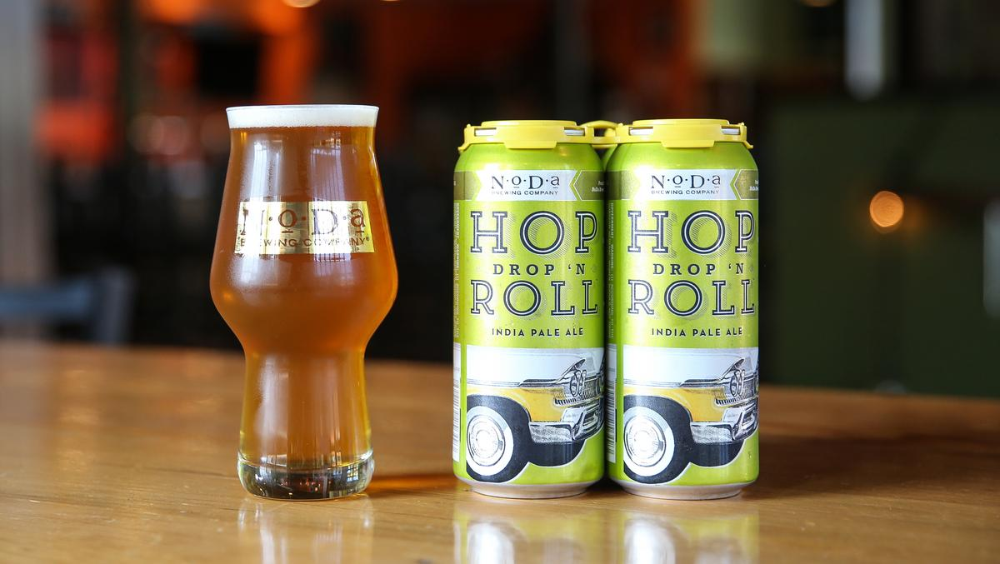

HOME
IPAs
Hop Drop 'N Roll IPA
NoDa Brewing Co.
2014 World Beer Cup® Gold Award Winner, American-Style IPA. Hops in your face. Crisp, mouthwatering, American citrus hops dominate for an ideal IPA character. It’s hopped before, during and after the boil with late boil additions of Citra and Amarillo for a complex flavor profile. The rich golden color comes from a blend of English and American base malts accented with substantial amounts of Vienna and Wheat malt.
Opening in the spring of 2011 in North Carolina, NoDa Brewing Company received a warm welcome and has since expanded to three locations (The OG, NorthEnd, and the CLT airport) and continues to be one of the crown jewels of the Queen City.
Check out their site HERE 